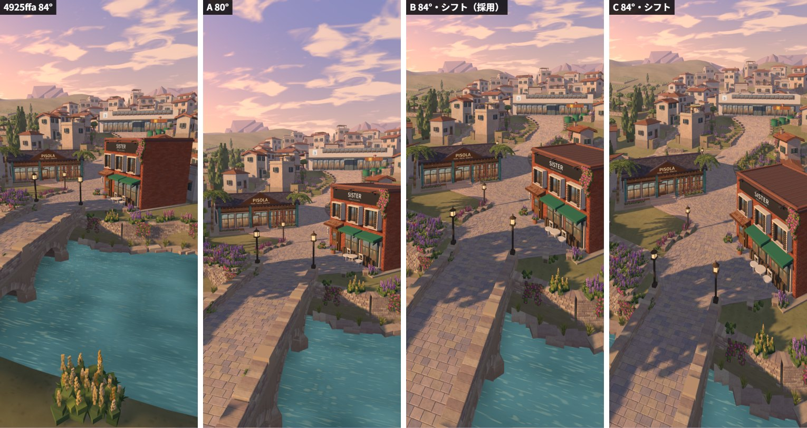
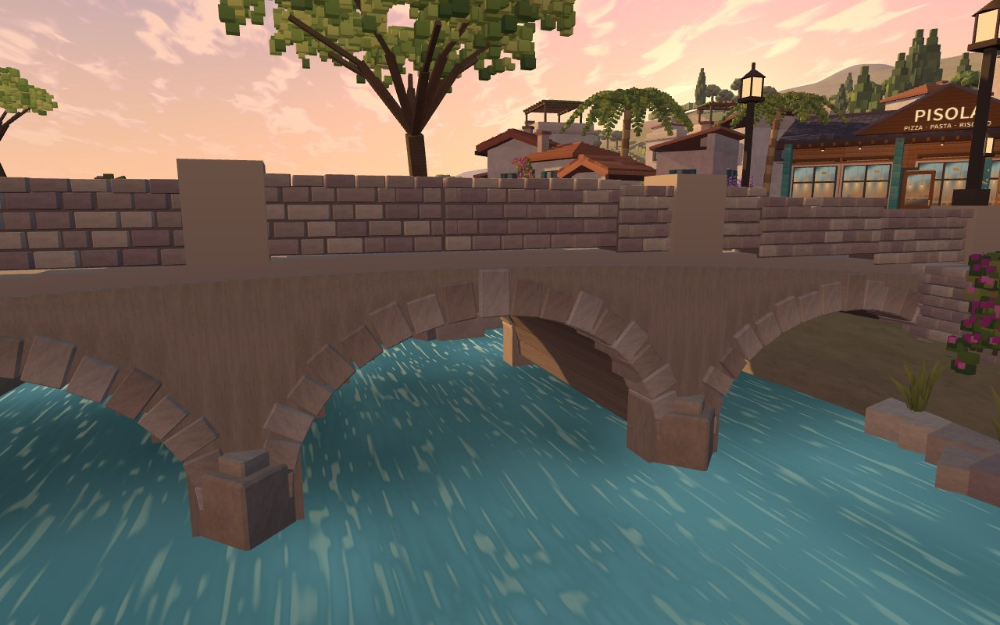

理想画像と調整前後


縦長画面（縦横比0.8未満）は、横長とは別のカメラ位置と画角を使います。
2案のうち、曲がる坂と展示館の正面全体が見える案B「東岸の高台」を採用し、案Aは削除しました。横長は坂と展示館の見え方を保ったままアーチが見えるよう調整し、縦長は3つの候補を比べて作り直しました。あわせて、返り光で浅くなっていた陰影を戻しました。
縦長画面（縦横比0.8未満）は、横長とは別のカメラ位置と画角を使います。
375×812で、4925ffa の84°と3つの候補を並べました。画角を詰めるだけではPISOLAが切れるため、どの候補もカメラの向きをPISOLA側へ寄せ、位置と高さもあわせて動かしています。

| 条件 | 4925ffa の84° | 候補A | 候補B（採用） | 候補C |
|---|---|---|---|---|
| a. PISOLA全体の余白（12px以上） | 10.9px ✗ | 18.9px | 19.9px | 20.2px |
| b. SISTERの正面の余白 | 101.6px | 24.8px | 25.3px | 18.0px |
| c. 坂と展示館の正面の余白 | 36.7px | 14.8px | 20.6px | 12.7px |
| d. 街の帯（画面の高さに対して） | 25.6〜49.3% | 34.5〜63.8% | 22.0〜59.8% | 22.0〜70.3% |
| d. 水面の画素 | 27.8% | 13.0% | 11.9% | 2.7% |
| e. 縦の線の傾き | 6.3° | 3.3° | 1.4° | 1.5° |
| f. 橋のアーチ | 1つ半 | 見えない | 見えない | 見えない |
| g. 画角（90°以下） | 84° | 80° | 84° | 84° |
候補Aは空が画面の上35%近くを占め、候補Cは真上に近くSISTERの側面が切れます。候補Bは空が上の約15%で、両店の看板・窓・ひさしが読めます。条件の測り方は README の「縦長の構図の候補」にあります。
返り光を0.62から0.30に弱め、色を暖色からやや青寄りの中立色に変えました。日陰の赤みは返り光を入れる前とほぼ同じに戻り、日向との差も広がりました。葉とPISOLAの暗部は、返り光を入れる前（7a57916）より少ない状態を保っているため、点光源の追加は不要と判断しました。
最終構図と同じカメラ、画素比1、UIを隠した画面写真で測った値。輝度はRec.709（0〜255）、暗部は輝度60未満の画素の割合。SISTERの壁はれんが色（R＞1.3G、R＞1.3B、R−G＞12）の画素だけを数えた。領域の座標は README にあります。
| 項目 | 7a57916（返り光なし） | 9c462ee（0.62・暖色） | 今回（0.30・やや青） |
|---|---|---|---|
| PC SISTERの日向／日陰の輝度比 | 2.51 | 1.65 | 1.98 |
| PC SISTER日陰の赤／青の比 | 2.19 | 3.01 | 2.24 |
| PC 左上の葉の暗部 | 78.3% | 15.1% | 26.9% |
| PC PISOLA正面の暗部 | 53.7% | 26.3% | 30.2% |
| スマホ SISTERの日向／日陰の輝度比 | 2.41 | 1.65 | 1.91 |
| スマホ SISTER日陰の赤／青の比 | 2.35 | 3.22 | 2.36 |
| スマホ PISOLA正面の暗部 | 41.2% | 12.3% | 16.9% |
縦長の構図では、オリーブの葉は画面に入らないため、葉の値は測っていません。
677d0e7 で、段状の箱だった橋の側面を3連の楕円アーチに作り替えました（迫石・要石・アーチ裏面・橋脚の水切り）。歩行の通路と通行判定は変えていません。




見出しの「歩く／街を眺める／橋の眺め」でモードを選びます。「橋の眺め」ではドラッグ（PCはQ/Eも可）で左右約18°、上下約10°まで見回せます。鑑賞中にもう一度「橋の眺め」を押すと、元の構図に戻ります。
「歩く」に戻ると、鑑賞前の歩行位置と向きから再開します。URLの #vista で直接開けます。